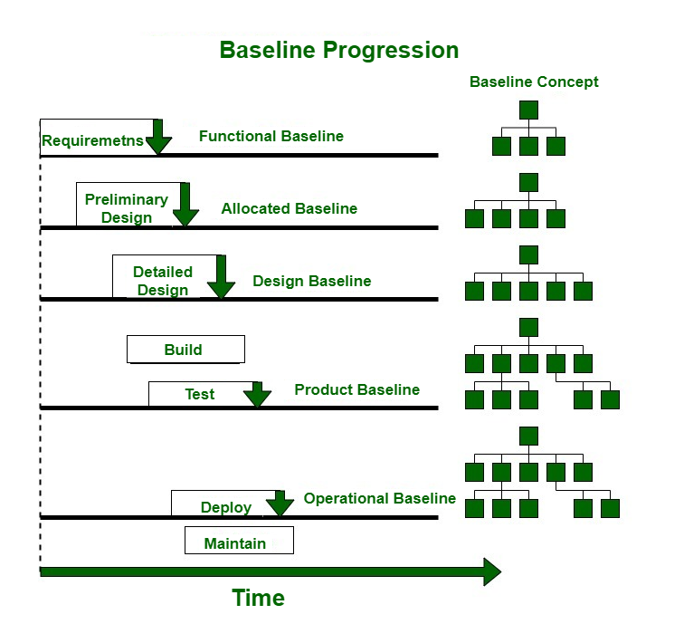

9.2 Software Configuration Management
Software Configuration Management (SCM) is the process of defining and implementing a standard configuration for a software project so that the product remains in a known, controlled state throughout development. SCM tracks and manages the emerging product and its versions, identifies and controls the configuration of software, hardware, and tools used throughout the development cycle, and ensures all stakeholders know what is being designed, developed, built, tested, and delivered.
Through SCM, design requirements can be traced to the final software product. SCM is an umbrella activity applied throughout the software process — see §9.1 Overview.
Definition
- SCM can be defined as the process of identifying, organizing, and controlling changes to software work products throughout the lifecycle.
- It is the process of defining and implementing a standard configuration that results in easier setup and maintenance, less downtime, better enterprise integration, more reliable backups, and maximised productivity by minimising mistakes.
- SCM manages and tracks the emerging product and its versions — not just the final deliverable.
- It identifies and controls configuration of software, hardware, and tools used throughout the development cycle.
- SCM includes revision control (tracking versions of each item) and establishment of baselines (formally approved snapshots of the product).
- In SPM, SCM is the process of controlling and tracking software changes, including revision control and establishment of baselines — see §3.2 Project Management Process.
Why SCM is essential for software projects
- As program complexity increased since the 1960s, SCM techniques became critical for improving productivity, reducing costs, and keeping projects progressing to completion.
- SCM gives developers a means to coordinate the work of numerous people on a common product — whether they work in close proximity or across a wide geographic area.
- Without a proper SCM plan, projects become increasingly difficult to control and can reach a point where the project must be discontinued because it cannot be fixed.
- SCM becomes especially important when software is developed through outsourcing or distributed development across multiple teams and locations.
- The choice of software lifecycle model also affects how SCM is applied — iterative and incremental models require more frequent baselines and version tagging than a single-pass waterfall.
Problems SCM prevents
- Inconsistency from replication: If every engineer keeps a personal copy of a module and makes local interface changes without notifying teammates, different copies become inconsistent and integration fails when modules are combined.
- Concurrent access conflicts: When two engineers edit the same module simultaneously, one save can overwrite the other's work — this applies to code, design documents, and any other deliverable object.
- Unstable development environment: If module C keeps changing while another developer integrates A with B, progress is blocked — baselines freeze a stable reference that others can depend on.
- Lost status information: Without SCM, the team loses track of who made changes and when — making debugging, auditing, and accountability impossible.
- Variant handling: When multiple versions or revisions of the same module exist, a bug fix must be applied consistently across all variants — SCM tracks which versions need the same patch.
Configuration Items (CIs)
- A Configuration Item (CI) is any work product that is placed under SCM control — source code files, design documents, test plans, executables, libraries, and user manuals.
- Examples of CIs include: SRS documents, architecture diagrams, individual source files, compiled binaries, test case files, build scripts, and configuration files.
- Each CI is uniquely identified, versioned, and tracked so that changes can be traced to their origin and impact assessed.
- Configuration identification determines the scope of the software system — selecting which items exist and which will be managed under SCM.
- Relationships among CIs are established so that the impact of a change to one item on others can be assessed before approval.
- All elements associated with a baseline must be kept under formal change control — no CI in a baseline can be modified without going through the change control process.
The Configuration Management (CM) database
- The CM database (or project repository) is the central store where all configuration items and their versions are maintained.
- When a change is approved, the affected CI is checked out from the CM database, modified, tested, and then checked in to create a new version.
- The CM database serves as the shared project database referenced by all team members — it is the single authoritative source for the current product configuration.
- Baselines are stored and referenced from the CM database; when a baseline is updated after approved changes, a new baseline is formed instantly for others to use.
Baselines

- A baseline is a formally accepted version of a software configuration item — designated and fixed at a specific point in time during the SCM process.
- Per IEEE Std 610.12-1990, a baseline is an agreed description and review of product attributes that serves as the basis for further development; changes can be done only through formal change control procedures.
- A baseline is a milestone and reference point marked by completion or delivery of one or more CIs and formal approval obtained through formal technical review.
- A baseline is a set of mutually consistent CIs that have been formally reviewed and agreed upon at a given milestone.
- The baseline is a shared project database — SCM maintains the integrity of this set of products.
- The main aim of a baseline is to reduce and control vulnerability — weaknesses that can lead to uncontrollable changes — by fixing key deliverables at critical points in the lifecycle.
- Once a baseline is set, it can only be changed through formal change control procedures — not by ad hoc edits.
- When a manager freezes an object to a baseline, a requester who needs changes works on a private copy; after configuration is updated, a new baseline is formed instantly for others to use and depend on.
Baseline establishment process
- Elements are documented properly and reviewed to find issues in the design model or work products.
- Errors and defects found during review are corrected and fixed.
- All parts of the model are reviewed; all problems found are fixed and formally approved.
- The approved model becomes the baseline.
- Any further changes to items in the baseline are allowed only after each change is evaluated and approved through formal change control.
Baseline types and their components
| Baseline type | Typical components included |
|---|---|
| Functional baseline | Operation document, system requirements |
| Allocated baseline | High-level design document, preliminary design, interface control documents |
| Design baseline | Detailed design documents |
| Product baseline | Source and executable code, final system specifications, user and maintenance manuals, hardware/software specifications |
| Operational baseline | Source/executable code, final specs, user manuals, acceptance test plans, test procedures, site integration test cases and reports |
| Acceptance test baseline | Source/executable code, integration test plans, test procedures, test cases, data sets, test reports |
| Integration test baseline | Source/executable code, unit test plans, test procedures, test cases, data sets, test reports |
| Unit test baseline | Source and executable code modules |
SCM change control cycle (overview)
Every change to a baselined CI follows a controlled cycle involving the Change Control Board (CCB) and the CM database. Full detail is in §9.5 Change Control Process.

- A New Requirements / System Problem Report is submitted as input to the change process.
- The CCB analyses the request and decides to: reject (notify proposer), defer to next version, or implement in the current version.
- For approved changes, the CI is checked out from the CM database, the change is implemented and verified against intended requirements.
- If verification fails, a new ECR (Engineering Change Request) is generated or re-work is performed; if it passes, the CI is checked in to the CM database.
- The process closes with a Closed ECR output document — the change is complete and recorded.
What SCM controls
- Source code — all program files under version control.
- Documentation — SRS, design documents, test plans, user manuals, release notes.
- Executables and libraries — compiled binaries, DLLs, and third-party components.
- Tools and environments — compilers, build scripts, configuration files, and deployment settings.
- SCM ensures the system is always in a known and stable state — every change is recorded, and any version can be reproduced.
SCM and traceability
- Through SCM, design requirements can be traced to the final software product — each requirement links to design elements, code modules, test cases, and delivered features.
- SCM supports reproducibility — a software system can be replicated at any stage of development for testing, debugging, or deployment.
- SCM enables parallel development — multiple developers work on different branches simultaneously without corrupting the main codebase.
- Effective SCM links code modifications to reported issues, making bug tracking more accurate and auditable.
- Baselines provide consistency and traceability across the project — all team members work from the same approved foundation at each milestone.
- SCM is a key process area at CMM Level 2 — formal SCM procedures are required for repeatable project management — see §3.10 CMM.
Q: Define Software Configuration Management. Explain Configuration Items, baselines, and the CM database. What problems does SCM prevent?
Model answer points:
- SCM = process of defining/implementing standard configuration; tracks product and versions; controls software/hardware/tools; ensures stakeholder visibility and traceability.
- Includes revision control + baselines; part of SPM; umbrella activity across SDLC.
- CI = any work product under SCM control, uniquely identified and versioned; all baseline elements under formal change control.
- CM database = central repository; check-out → modify → test → check-in cycle.
- Baseline (IEEE 610.12-1990) = agreed product attributes; milestone/reference point; mutually consistent CIs; changed only via formal change control.
- Baseline process: document → review/fix → approve → baseline → evaluate all further changes.
- Baseline types: functional, allocated, design, product, operational, acceptance/integration/unit test baselines.
- Problems prevented: inconsistency, concurrent access, unstable environment, lost status info, variant handling.
- Change cycle: CR → CCB → check-out → implement/verify → check-in → closed ECR.